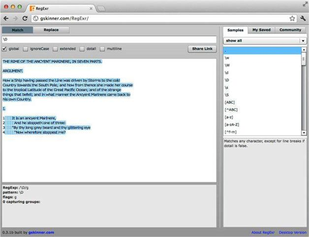

2.3 匹配非数字字符
通常可以将简写式取反，取反的结果就是排除。比如，要匹配非数字字符，可使用包含以下大写字母D的简写式：
\D
请在RegExr中试一试。大写字母D取代小写字母d，就会匹配非数字字符（如图2-4所示）。该简写式与以下字符组取反的作用相同（字符组取反的意思其实就是“不匹配这些”或“匹配除这些以外的内容”）：
[^0-9]
下面这个表达式作用也一样：
[^\d]

图2-4 在RegExr中用\D匹配非数字字符